1.3.12 Buenas Prácticas de Visualización de Datos#
Versión Python con Matplotlib y Seaborn
Este notebook recorre, paso a paso, los principios fundamentales para crear visualizaciones efectivas. En cada tema veremos:
📖 La teoría detrás del principio.
❌ Un ejemplo de mala práctica.
✅ Un ejemplo de buena práctica.
💡 La explicación de por qué uno funciona mejor que el otro.
Idea central: una buena visualización no busca decorar, sino comunicar. Cada elemento (color, tamaño, posición, tipografía) debe tener un propósito.
0. Configuración inicial#
Importamos las librerías que usaremos en todo el notebook y fijamos una semilla aleatoria para que los resultados sean reproducibles.
# Librerías estándar para análisis y visualización
import numpy as np # Operaciones numéricas
import pandas as pd # Manejo de datos en tablas (DataFrames)
import matplotlib.pyplot as plt # Visualización base
import seaborn as sns # Visualización estadística (encima de matplotlib)
from matplotlib.ticker import FuncFormatter # Para formatear números en los ejes
# Semilla para reproducibilidad: garantiza que los datos aleatorios
# sean siempre los mismos cada vez que se ejecuta el notebook.
np.random.seed(42)
# Configuración global recomendada para gráficos limpios
plt.rcParams['figure.dpi'] = 100 # Resolución de pantalla
plt.rcParams['savefig.dpi'] = 150 # Resolución al guardar
plt.rcParams['font.family'] = 'DejaVu Sans' # Fuente legible y disponible
print('✅ Librerías cargadas correctamente')
✅ Librerías cargadas correctamente
Dataset de ejemplo#
Crearemos un dataset ficticio de ventas mensuales por categoría de producto que usaremos en varios ejemplos. Trabajar con un mismo dataset facilita comparar técnicas.
# Generamos datos sintéticos de ventas
meses = ['Ene', 'Feb', 'Mar', 'Abr', 'May', 'Jun',
'Jul', 'Ago', 'Sep', 'Oct', 'Nov', 'Dic']
ventas = pd.DataFrame({
'Mes': meses,
'Electrónica': [120, 132, 145, 150, 160, 175, 180, 190, 205, 220, 240, 280],
'Ropa': [ 90, 95, 100, 110, 115, 120, 125, 130, 135, 140, 150, 200],
'Hogar': [ 70, 75, 78, 82, 85, 88, 92, 95, 98, 100, 105, 130],
'Deportes': [ 50, 55, 60, 62, 65, 70, 72, 74, 76, 78, 80, 95],
})
# Vista rápida del DataFrame
ventas.head()
| Mes | Electrónica | Ropa | Hogar | Deportes | |
|---|---|---|---|---|---|
| 0 | Ene | 120 | 90 | 70 | 50 |
| 1 | Feb | 132 | 95 | 75 | 55 |
| 2 | Mar | 145 | 100 | 78 | 60 |
| 3 | Abr | 150 | 110 | 82 | 62 |
| 4 | May | 160 | 115 | 85 | 65 |
1. Propósito claro: cada gráfico responde una pregunta#
Antes de elegir el tipo de gráfico, debemos preguntarnos:
¿Qué pregunta quiero que el lector responda al ver esto?
Si no podemos formular esa pregunta en una frase, probablemente el gráfico sobra o necesita reenfocarse.
Ejemplo: queremos responder «¿Cómo evolucionaron las ventas de Electrónica durante el año?»
# ❌ MALA PRÁCTICA: gráfico sin un propósito claro
# Mostramos TODAS las categorías a la vez sin destacar nada,
# así el lector no sabe en qué fijarse.
fig, ax = plt.subplots(figsize=(9, 4))
for col in ['Electrónica', 'Ropa', 'Hogar', 'Deportes']:
ax.plot(ventas['Mes'], ventas[col], marker='o')
ax.set_title('Datos') # Título vacío de significado
ax.legend(['Electrónica', 'Ropa', 'Hogar', 'Deportes'])
plt.show()
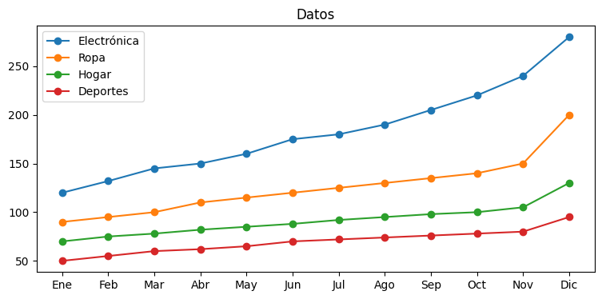
# ✅ BUENA PRÁCTICA: el gráfico responde una pregunta concreta.
# Destacamos la categoría de interés (Electrónica) y dejamos
# las demás en gris claro como contexto.
fig, ax = plt.subplots(figsize=(9, 4))
# Líneas de contexto (grises, sin protagonismo)
for col in ['Ropa', 'Hogar', 'Deportes']:
ax.plot(ventas['Mes'], ventas[col], color='lightgray', linewidth=1.5)
# Línea protagonista
ax.plot(ventas['Mes'], ventas['Electrónica'],
color='#1f77b4', linewidth=2.8, marker='o', label='Electrónica')
# Título que ya cuenta la historia
ax.set_title('Las ventas de Electrónica crecieron un 133% en el año',
fontsize=13, fontweight='bold', loc='left')
ax.set_ylabel('Ventas (miles USD)')
# Quitamos bordes innecesarios para reducir ruido visual
for spine in ['top', 'right']:
ax.spines[spine].set_visible(False)
plt.tight_layout()
plt.show()
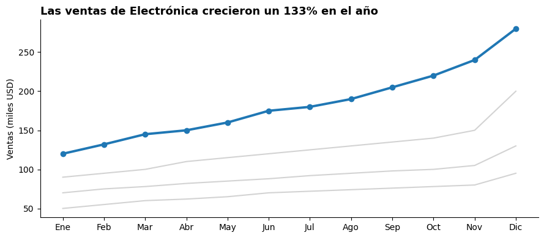
💡 ¿Por qué la segunda funciona mejor?
El título ya entrega la conclusión, no obliga al lector a deducirla.
Una sola serie está destacada → el ojo sabe a dónde mirar.
Las demás categorías siguen ahí como contexto, pero no compiten por atención.
2. Simplicidad efectiva: eliminar el ruido visual#
Edward Tufte llamó «chartjunk» a todos los elementos decorativos que no aportan información: sombras, gradientes, fondos, bordes excesivos, efectos 3D…
Regla práctica: si un elemento no añade información, quítalo.
# ❌ MALA PRÁCTICA: muchos elementos decorativos que distraen
fig, ax = plt.subplots(figsize=(8, 4), facecolor='#fff8dc') # Fondo crema innecesario
ax.bar(ventas['Mes'], ventas['Hogar'],
color='hotpink', edgecolor='purple', linewidth=2, hatch='///') # Patrón hatch
ax.set_facecolor('#ffe4e1') # Fondo del área de plot
ax.grid(True, color='red', linestyle='--') # Cuadrícula chillona
ax.set_title('★ ¡¡¡VENTAS DE HOGAR!!! ★', fontsize=16, color='purple')
plt.show()
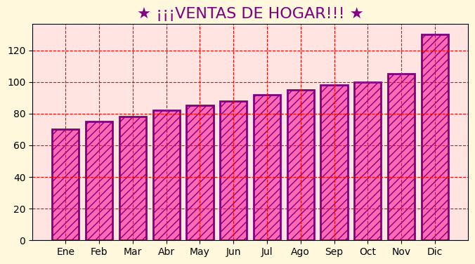
# ✅ BUENA PRÁCTICA: minimalista, solo lo necesario
fig, ax = plt.subplots(figsize=(8, 4))
ax.bar(ventas['Mes'], ventas['Hogar'], color='#4c72b0')
ax.set_title('Ventas mensuales — Categoría Hogar',
fontsize=12, fontweight='bold', loc='left')
ax.set_ylabel('Miles USD')
# Cuadrícula sutil solo en el eje Y, ayuda a leer sin distraer
ax.yaxis.grid(True, color='lightgray', linewidth=0.6)
ax.set_axisbelow(True) # La cuadrícula queda DETRÁS de las barras
# Eliminar bordes superfluos
for spine in ['top', 'right']:
ax.spines[spine].set_visible(False)
plt.tight_layout()
plt.show()
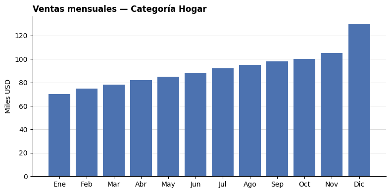
💡 Ratio dato-tinta (Tufte): la mayor parte de la «tinta» del gráfico debe representar datos, no decoración. Cuando dudes, quita elementos hasta que el mensaje quede claro.
3. Jerarquía visual: guiar la mirada#
El cerebro procesa la información visual con prioridades. Tres herramientas para guiar la mirada:
Recurso |
Uso recomendado |
|---|---|
Tamaño |
Lo más grande se ve primero |
Color |
Reserva colores intensos solo para lo importante |
Posición |
Lectura natural: arriba-abajo, izquierda-derecha |
# Vamos a destacar el mes con MAYOR ventas en Electrónica.
# Identificamos el índice del valor máximo:
idx_max = ventas['Electrónica'].idxmax()
# Creamos una lista de colores: gris para todos, naranja para el máximo
colores = ['#cfd8dc'] * len(ventas) # gris claro por defecto
colores[idx_max] = '#e67e22' # naranja para destacar
fig, ax = plt.subplots(figsize=(9, 4))
ax.bar(ventas['Mes'], ventas['Electrónica'], color=colores)
# Anotación que refuerza la jerarquía
ax.annotate(f'Máximo del año: ${ventas["Electrónica"].max()}K',
xy=(idx_max, ventas['Electrónica'].max()),
xytext=(idx_max - 4, ventas['Electrónica'].max() + 10),
fontsize=10, color='#e67e22', fontweight='bold',
arrowprops=dict(arrowstyle='->', color='#e67e22'))
ax.set_title('Diciembre concentra el pico de ventas en Electrónica',
fontsize=12, fontweight='bold', loc='left')
ax.set_ylabel('Miles USD')
for spine in ['top', 'right']:
ax.spines[spine].set_visible(False)
plt.tight_layout()
plt.show()
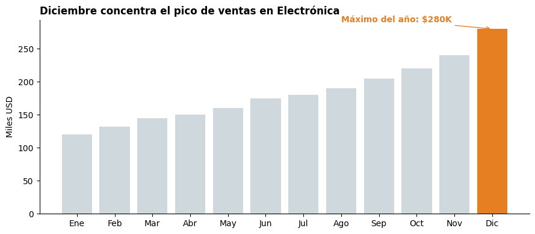
💡 La técnica del color destacado es muy potente: 11 barras grises + 1 naranja → la mirada va directo al insight, sin necesidad de leer todas las etiquetas.
4. Consistencia gráfica#
Cuando varios gráficos representan la misma categoría (por ejemplo, «Electrónica»), debe mantenerse el mismo color en todos. De lo contrario el lector se desorienta.
# Definimos UN diccionario de colores y lo reutilizamos siempre.
# Esta es la mejor manera de garantizar consistencia.
PALETA_CATEGORIAS = {
'Electrónica': '#1f77b4', # azul
'Ropa': '#2ca02c', # verde
'Hogar': '#ff7f0e', # naranja
'Deportes': '#d62728', # rojo
}
# Dos gráficos distintos, MISMOS colores por categoría → consistente.
fig, axes = plt.subplots(1, 2, figsize=(13, 4))
# Gráfico 1: total anual por categoría (barras)
totales = ventas[list(PALETA_CATEGORIAS)].sum()
axes[0].bar(totales.index, totales.values,
color=[PALETA_CATEGORIAS[c] for c in totales.index])
axes[0].set_title('Ventas totales del año', loc='left', fontweight='bold')
axes[0].set_ylabel('Miles USD')
# Gráfico 2: evolución mensual (líneas)
for cat, color in PALETA_CATEGORIAS.items():
axes[1].plot(ventas['Mes'], ventas[cat], color=color, label=cat, linewidth=2)
axes[1].set_title('Evolución mensual', loc='left', fontweight='bold')
axes[1].legend(frameon=False)
# Limpieza visual común
for ax in axes:
for spine in ['top', 'right']:
ax.spines[spine].set_visible(False)
plt.tight_layout()
plt.show()
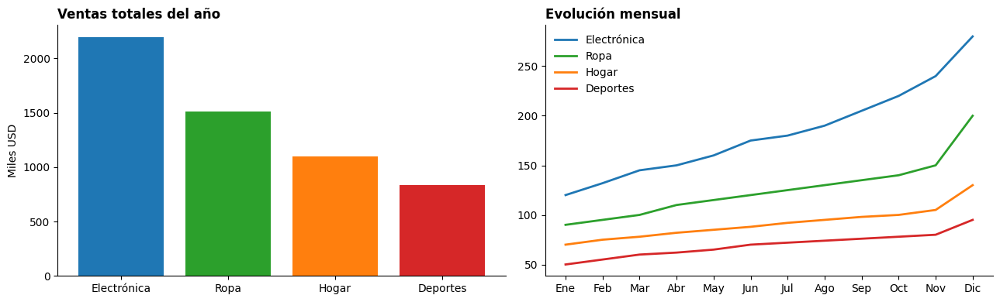
💡 Truco profesional: define la paleta como un diccionario constante al inicio del notebook. Si luego decides cambiar un color, lo cambias en un único lugar.
5. Uso correcto del color#
Reglas básicas:
Funcional, no decorativo: el color debe transmitir información.
Limitado: idealmente entre 5 y 7 colores.
Accesible: contraste suficiente y compatible con daltonismo.
Consistente: mismo color = misma categoría siempre.
Existen tres tipos de paletas y cada una tiene su uso:
# Datos para ilustrar los tres tipos de paleta
datos = np.array([[1, 2, 3, 4, 5, 6, 7, 8, 9]])
fig, axes = plt.subplots(3, 1, figsize=(10, 4))
# 1) CUALITATIVA: para categorías sin orden (países, productos…)
axes[0].imshow(datos, cmap='tab10', aspect='auto')
axes[0].set_title('Cualitativa (categorías sin orden) — ej: tab10', loc='left')
axes[0].set_yticks([]); axes[0].set_xticks([])
# 2) SECUENCIAL: para magnitudes que van de menos a más
axes[1].imshow(datos, cmap='Blues', aspect='auto')
axes[1].set_title('Secuencial (de menor a mayor) — ej: Blues', loc='left')
axes[1].set_yticks([]); axes[1].set_xticks([])
# 3) DIVERGENTE: para datos con un punto medio (ej: pérdida vs ganancia)
axes[2].imshow(datos, cmap='RdBu_r', aspect='auto')
axes[2].set_title('Divergente (con punto medio) — ej: RdBu', loc='left')
axes[2].set_yticks([]); axes[2].set_xticks([])
plt.tight_layout()
plt.show()
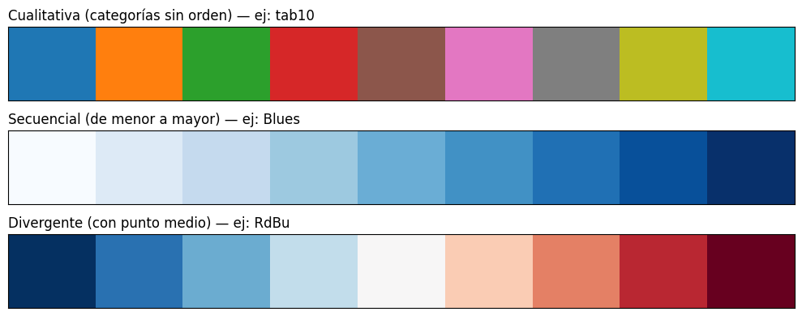
Accesibilidad: pensar en daltonismo#
Aproximadamente el 8% de los hombres y el 0.5% de las mujeres tienen algún tipo de daltonismo. La combinación rojo/verde es la más problemática.
Las paletas como viridis, cividis o tab10 están diseñadas para ser legibles incluso con daltonismo.
# ❌ MALA PRÁCTICA: rojo y verde son indistinguibles para daltónicos
# ✅ BUENA PRÁCTICA: paletas perceptualmente uniformes (viridis)
fig, axes = plt.subplots(1, 2, figsize=(11, 3.5))
categorias = ['A', 'B', 'C', 'D']
valores = [25, 40, 30, 55]
# Mala paleta: rojo + verde
axes[0].bar(categorias, valores, color=['red', 'green', 'red', 'green'])
axes[0].set_title('❌ Rojo/verde: problema para daltónicos', loc='left')
# Buena paleta: viridis (segura para daltonismo)
axes[1].bar(categorias, valores, color=sns.color_palette('viridis', 4))
axes[1].set_title('✅ Viridis: accesible para todos', loc='left')
for ax in axes:
for spine in ['top', 'right']:
ax.spines[spine].set_visible(False)
plt.tight_layout()
plt.show()
/tmp/ipykernel_10147/3866751215.py:21: UserWarning: Glyph 10060 (\N{CROSS MARK}) missing from font(s) DejaVu Sans.
plt.tight_layout()
/tmp/ipykernel_10147/3866751215.py:21: UserWarning: Glyph 9989 (\N{WHITE HEAVY CHECK MARK}) missing from font(s) DejaVu Sans.
plt.tight_layout()
/usr/local/lib/python3.12/dist-packages/IPython/core/pylabtools.py:151: UserWarning: Glyph 10060 (\N{CROSS MARK}) missing from font(s) DejaVu Sans.
fig.canvas.print_figure(bytes_io, **kw)
/usr/local/lib/python3.12/dist-packages/IPython/core/pylabtools.py:151: UserWarning: Glyph 9989 (\N{WHITE HEAVY CHECK MARK}) missing from font(s) DejaVu Sans.
fig.canvas.print_figure(bytes_io, **kw)
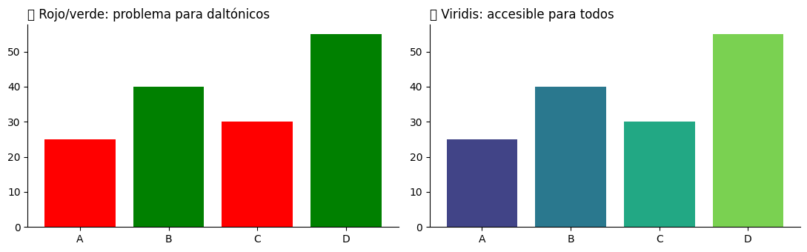
6. Tipografía clara y legible#
La jerarquía tipográfica (tamaño, peso) ayuda al lector a identificar rápidamente qué leer primero.
Una escala recomendada:
Elemento |
Tamaño aprox. |
Peso |
|---|---|---|
Título principal |
16–18 pt |
bold |
Subtítulo |
13–14 pt |
semibold |
Etiquetas de datos |
10–11 pt |
normal |
Notas al pie |
8–9 pt |
normal o italic |
# Aplicamos la jerarquía tipográfica en un gráfico real
fig, ax = plt.subplots(figsize=(9, 4.5))
ax.bar(ventas['Mes'], ventas['Electrónica'], color='#4c72b0')
# Título principal: el más grande y en negrita
ax.set_title('Ventas de Electrónica 2024',
fontsize=16, fontweight='bold', loc='left', pad=20)
# Subtítulo: explica el contenido (truco: usar text() porque matplotlib
# no tiene un "set_subtitle" oficial)
ax.text(0, 1.02, 'Cifras en miles de USD — incremento sostenido durante el año',
transform=ax.transAxes, fontsize=11, color='gray', style='italic')
# Etiquetas de los ejes: tamaño intermedio
ax.set_ylabel('Ventas', fontsize=11)
ax.tick_params(axis='both', labelsize=10)
# Nota al pie: la más pequeña
fig.text(0.05, -0.02, 'Fuente: datos simulados con fines didácticos.',
fontsize=8, color='gray', style='italic')
for spine in ['top', 'right']:
ax.spines[spine].set_visible(False)
plt.tight_layout()
plt.show()
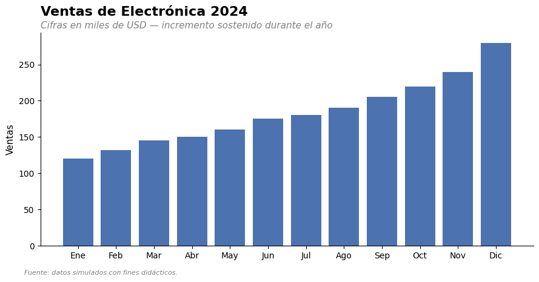
7. Espacios en blanco#
El espacio vacío no es desperdicio. Aporta:
📖 Mejor legibilidad.
😌 Menor fatiga visual.
🎯 Separación lógica entre elementos.
👁️ Foco en el contenido importante.
# ❌ MALA PRÁCTICA: gráficos pegados, sin respiración
fig, axes = plt.subplots(1, 3, figsize=(11, 3))
for i, cat in enumerate(['Electrónica', 'Ropa', 'Hogar']):
axes[i].bar(ventas['Mes'], ventas[cat])
axes[i].set_title(cat)
# OJO: NO usamos tight_layout ni subplots_adjust → los textos se atropellan
plt.show()
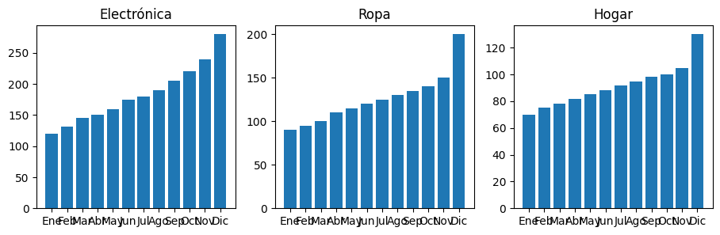
# ✅ BUENA PRÁCTICA: espacio entre gráficos, márgenes generosos
fig, axes = plt.subplots(1, 3, figsize=(13, 4))
for i, cat in enumerate(['Electrónica', 'Ropa', 'Hogar']):
axes[i].bar(ventas['Mes'], ventas[cat], color=PALETA_CATEGORIAS[cat])
axes[i].set_title(cat, loc='left', fontweight='bold', pad=10)
# Mostramos solo cada 2º mes para evitar amontonamiento
axes[i].set_xticks(range(0, 12, 2))
axes[i].set_xticklabels(meses[::2])
for spine in ['top', 'right']:
axes[i].spines[spine].set_visible(False)
# Espaciado horizontal entre subgráficos
plt.subplots_adjust(wspace=0.35)
plt.tight_layout()
plt.show()
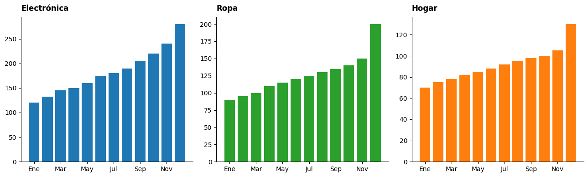
8. Mostrar solo lo relevante#
Filtra antes de visualizar. Si un dato no aporta a responder la pregunta del gráfico, sobra.
# Imaginemos que tenemos 20 productos pero solo nos interesan los TOP 5
productos = pd.DataFrame({
'producto': [f'Producto {i}' for i in range(1, 21)],
'ventas': np.random.randint(10, 200, 20)
}).sort_values('ventas', ascending=False)
fig, axes = plt.subplots(1, 2, figsize=(13, 4.5))
# ❌ Mostrar TODO sin filtrar: 20 barras saturan al lector
axes[0].barh(productos['producto'], productos['ventas'], color='#aaaaaa')
axes[0].invert_yaxis()
axes[0].set_title('❌ 20 productos: demasiada información', loc='left')
axes[0].tick_params(labelsize=8)
# ✅ Mostrar solo el TOP 5: foco en lo que importa
top5 = productos.head(5)
axes[1].barh(top5['producto'], top5['ventas'], color='#4c72b0')
axes[1].invert_yaxis()
axes[1].set_title('✅ Top 5: foco en los líderes', loc='left', fontweight='bold')
# Etiquetas de valor al final de cada barra del Top 5
for i, (prod, val) in enumerate(zip(top5['producto'], top5['ventas'])):
axes[1].text(val + 2, i, str(val), va='center', fontsize=10)
for ax in axes:
for spine in ['top', 'right']:
ax.spines[spine].set_visible(False)
plt.tight_layout()
plt.show()
/tmp/ipykernel_10147/872582507.py:29: UserWarning: Glyph 10060 (\N{CROSS MARK}) missing from font(s) DejaVu Sans.
plt.tight_layout()
/tmp/ipykernel_10147/872582507.py:29: UserWarning: Glyph 9989 (\N{WHITE HEAVY CHECK MARK}) missing from font(s) DejaVu Sans.
plt.tight_layout()
/usr/local/lib/python3.12/dist-packages/IPython/core/pylabtools.py:151: UserWarning: Glyph 10060 (\N{CROSS MARK}) missing from font(s) DejaVu Sans.
fig.canvas.print_figure(bytes_io, **kw)
/usr/local/lib/python3.12/dist-packages/IPython/core/pylabtools.py:151: UserWarning: Glyph 9989 (\N{WHITE HEAVY CHECK MARK}) missing from font(s) DejaVu Sans.
fig.canvas.print_figure(bytes_io, **kw)
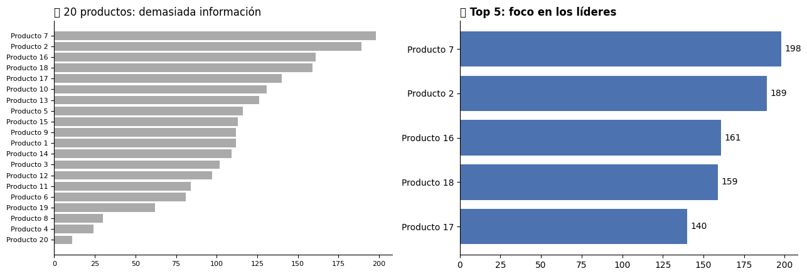
9. Errores comunes que debes evitar#
9.1 Ejes truncados engañosos#
Empezar el eje Y en un valor distinto de cero exagera diferencias y puede ser engañoso. En gráficos de barras esto es especialmente grave.
valores = [98, 100, 102, 105]
etiquetas = ['Q1', 'Q2', 'Q3', 'Q4']
fig, axes = plt.subplots(1, 2, figsize=(11, 4))
# ❌ Eje truncado: parece un crecimiento enorme cuando solo es 7%
axes[0].bar(etiquetas, valores, color='#d62728')
axes[0].set_ylim(95, 107) # ← truncamiento engañoso
axes[0].set_title('❌ Eje truncado (95-107)\nParece que las ventas se duplicaron', loc='left')
# ✅ Eje desde cero: la diferencia real es modesta
axes[1].bar(etiquetas, valores, color='#2ca02c')
axes[1].set_ylim(0, 120)
axes[1].set_title('✅ Eje desde 0\nMuestra el crecimiento real (~7%)', loc='left')
for ax in axes:
for spine in ['top', 'right']:
ax.spines[spine].set_visible(False)
plt.tight_layout()
plt.show()
/tmp/ipykernel_10147/3929472605.py:20: UserWarning: Glyph 10060 (\N{CROSS MARK}) missing from font(s) DejaVu Sans.
plt.tight_layout()
/tmp/ipykernel_10147/3929472605.py:20: UserWarning: Glyph 9989 (\N{WHITE HEAVY CHECK MARK}) missing from font(s) DejaVu Sans.
plt.tight_layout()
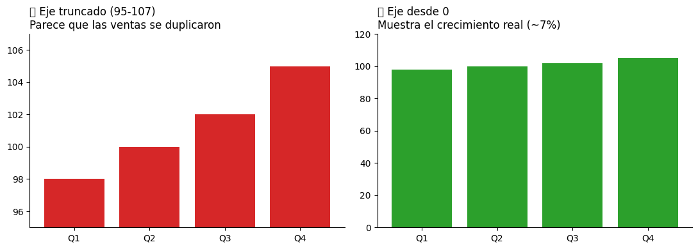
🚨 Regla: en gráficos de barras, el eje Y debe iniciar en cero. En gráficos de líneas se admite cierto truncamiento si interesa mostrar variaciones pequeñas, pero siempre con claridad.
9.2 Demasiadas categorías en un gráfico circular#
Los gráficos de torta funcionan mal con muchas categorías: el ojo no compara bien ángulos. Recomendación: máximo 5–7 segmentos, agrupando el resto como «Otros».
# Generamos 12 categorías para ilustrar el problema
cats_muchas = [f'Cat {i}' for i in range(1, 13)]
vals_muchas = np.random.randint(5, 50, 12)
fig, axes = plt.subplots(1, 2, figsize=(13, 5))
# ❌ 12 segmentos: imposible comparar tamaños
axes[0].pie(vals_muchas, labels=cats_muchas, autopct='%1.0f%%', startangle=90)
axes[0].set_title('❌ 12 categorías en un pie chart', loc='left')
# ✅ Top 5 + "Otros": claro y comparable
df_pie = pd.DataFrame({'cat': cats_muchas, 'val': vals_muchas}).sort_values('val', ascending=False)
top5_pie = df_pie.head(5).copy()
otros = pd.DataFrame({'cat': ['Otros'], 'val': [df_pie['val'].iloc[5:].sum()]})
df_pie_final = pd.concat([top5_pie, otros], ignore_index=True)
axes[1].pie(df_pie_final['val'], labels=df_pie_final['cat'],
autopct='%1.0f%%', startangle=90,
colors=sns.color_palette('Blues_r', 6))
axes[1].set_title('✅ Top 5 + Otros: lectura clara', loc='left', fontweight='bold')
plt.tight_layout()
plt.show()
/tmp/ipykernel_10147/4067019194.py:22: UserWarning: Glyph 10060 (\N{CROSS MARK}) missing from font(s) DejaVu Sans.
plt.tight_layout()
/tmp/ipykernel_10147/4067019194.py:22: UserWarning: Glyph 9989 (\N{WHITE HEAVY CHECK MARK}) missing from font(s) DejaVu Sans.
plt.tight_layout()
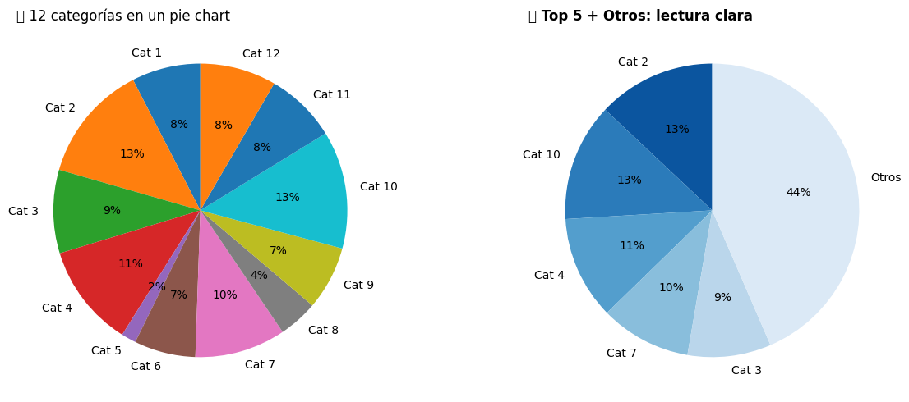
9.3 Efectos 3D#
Los efectos 3D casi siempre distorsionan la percepción del tamaño real. Salvo casos muy específicos (por ejemplo, datos genuinamente tridimensionales), evítalos.
Matplotlib lo facilita: por defecto los gráficos son planos. Si ves a alguien usar 3D solo «para que se vea bonito», es probable que esté empeorando la lectura.
10. Comparación final: gráfico bien vs mal diseñado#
Vamos a integrar todos los principios en un único ejemplo lado a lado.
fig, axes = plt.subplots(1, 2, figsize=(14, 5))
# ============================================================
# ❌ MAL DISEÑADO: acumula casi todos los errores
# ============================================================
ax = axes[0]
ax.set_facecolor('#fff8dc')
# Cada barra de un color distinto sin razón → exceso de colores
colores_random = ['red', 'blue', 'green', 'purple', 'orange',
'pink', 'cyan', 'magenta', 'yellow', 'brown',
'lime', 'navy']
ax.bar(ventas['Mes'], ventas['Electrónica'],
color=colores_random, edgecolor='black', linewidth=2)
ax.set_ylim(100, 290) # Eje truncado: engañoso
ax.set_title('Datos!!!', fontsize=14, color='red') # Título sin información
ax.grid(True, color='red', linestyle=':') # Grid chillón
ax.set_xlabel('MES', fontweight='bold')
ax.set_ylabel('VAL', fontweight='bold')
# ============================================================
# ✅ BIEN DISEÑADO: aplica los principios vistos
# ============================================================
ax = axes[1]
# Color uniforme + destacar el máximo
idx_max = ventas['Electrónica'].idxmax()
colores_ok = ['#cfd8dc'] * 12
colores_ok[idx_max] = '#1f77b4'
ax.bar(ventas['Mes'], ventas['Electrónica'], color=colores_ok)
ax.set_ylim(0, 310) # Eje desde cero
ax.set_title('Diciembre marcó el récord anual de ventas en Electrónica',
fontsize=12, fontweight='bold', loc='left', pad=15)
ax.set_ylabel('Miles USD', fontsize=10)
# Anotación que ayuda a interpretar
ax.annotate(f'${ventas["Electrónica"].max()}K',
xy=(idx_max, ventas['Electrónica'].max()),
xytext=(0, 8), textcoords='offset points',
ha='center', fontweight='bold', color='#1f77b4')
ax.yaxis.grid(True, color='lightgray', linewidth=0.6)
ax.set_axisbelow(True)
for spine in ['top', 'right']:
ax.spines[spine].set_visible(False)
plt.tight_layout()
plt.show()
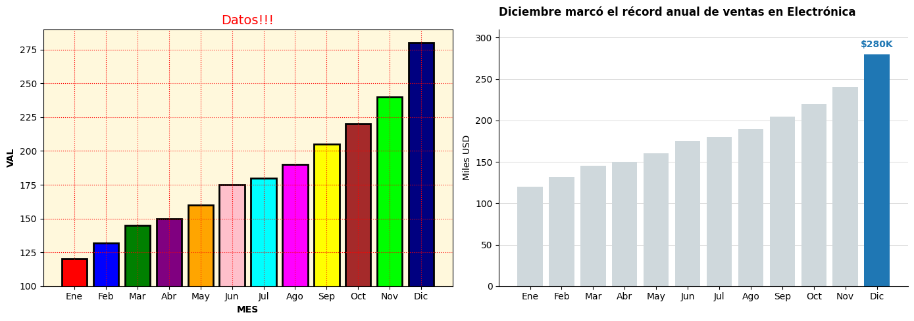
Diferencias clave#
Aspecto |
❌ Mal diseñado |
✅ Bien diseñado |
|---|---|---|
Eje Y |
Truncado (100-290) |
Desde 0 |
Color |
12 colores aleatorios |
1 color + destacado funcional |
Título |
«Datos!!!» |
Cuenta la conclusión |
Fondo |
Crema saturado |
Limpio |
Cuadrícula |
Roja punteada |
Gris sutil |
Etiquetas |
«VAL», «MES» |
«Miles USD» |
11. Narrativa visual (storytelling)#
Una buena visualización no es solo un gráfico, es una historia con datos. Sigue esta estructura:
Pregunta: ¿qué motivó el análisis?
Contexto: ¿de dónde vienen los datos? ¿qué periodo?
Hallazgos: ¿qué patrones aparecen?
Acción: ¿qué decisión sugiere?
# Ejemplo: gráfico con narrativa completa
fig, ax = plt.subplots(figsize=(11, 5.5))
# Datos protagonistas: Electrónica vs Deportes
ax.plot(ventas['Mes'], ventas['Electrónica'],
color='#1f77b4', linewidth=2.8, marker='o', label='Electrónica')
ax.plot(ventas['Mes'], ventas['Deportes'],
color='#cfd8dc', linewidth=2, marker='o', label='Deportes')
# 1) Pregunta como título principal
ax.set_title('¿Vale la pena reforzar el inventario de Electrónica para fin de año?',
fontsize=13, fontweight='bold', loc='left', pad=25)
# 2) Contexto como subtítulo
ax.text(0, 1.04, 'Comparación mensual 2024 — datos en miles de USD',
transform=ax.transAxes, fontsize=10, color='gray', style='italic')
# 3) Hallazgo destacado mediante anotación
ax.annotate('Brecha máxima en Diciembre\n(+195K vs Deportes)',
xy=(11, 280), xytext=(7.5, 250),
fontsize=10, color='#1f77b4', fontweight='bold',
arrowprops=dict(arrowstyle='->', color='#1f77b4'))
# 4) Acción como nota al pie
fig.text(0.05, -0.02,
'💡 Recomendación: anticipar el stock de Electrónica desde octubre.',
fontsize=10, color='#1f77b4', fontweight='bold')
ax.set_ylabel('Ventas (miles USD)')
ax.legend(frameon=False, loc='upper left')
for spine in ['top', 'right']:
ax.spines[spine].set_visible(False)
plt.tight_layout()
plt.show()
/usr/local/lib/python3.12/dist-packages/IPython/core/pylabtools.py:151: UserWarning: Glyph 128161 (\N{ELECTRIC LIGHT BULB}) missing from font(s) DejaVu Sans.
fig.canvas.print_figure(bytes_io, **kw)
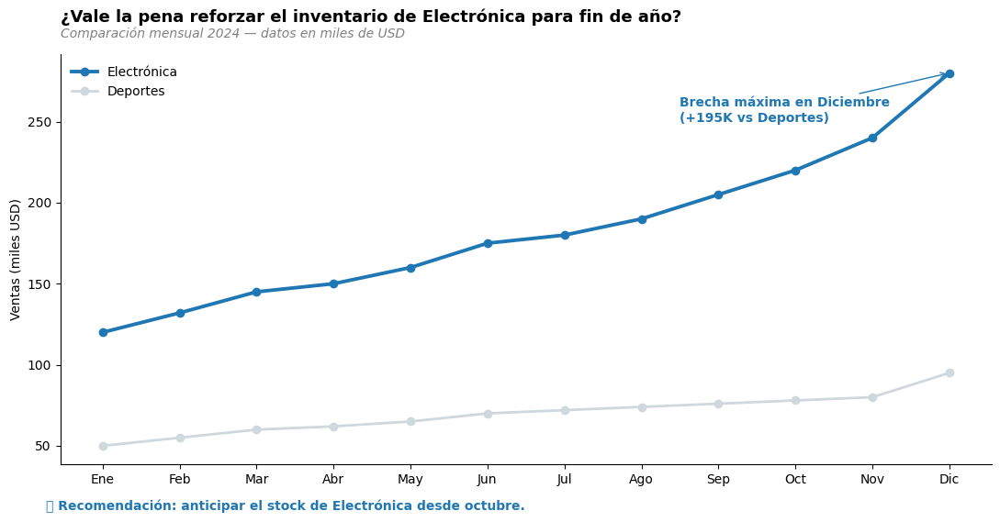
12. Accesibilidad#
Una visualización accesible es una mejor visualización:
🎨 Contraste: relación mínima 4.5:1 entre texto y fondo (WCAG).
👁️ Daltonismo: usa paletas seguras (viridis, cividis, tab10).
🔠 Tamaño legible: evita texto < 9 pt en pantalla.
📝 Texto alternativo: al guardar/exportar añade una descripción del gráfico.
🔣 Redundancia: no dependas SOLO del color (añade etiquetas, formas o patrones).
# Ejemplo: redundancia color + marcador
# Si alguien no distingue colores, los marcadores siguen funcionando.
fig, ax = plt.subplots(figsize=(9, 4.5))
marcadores = {'Electrónica': 'o', 'Ropa': 's', 'Hogar': '^', 'Deportes': 'D'}
for cat in ['Electrónica', 'Ropa', 'Hogar', 'Deportes']:
ax.plot(ventas['Mes'], ventas[cat],
color=PALETA_CATEGORIAS[cat],
marker=marcadores[cat], # ← redundancia visual
markersize=8, linewidth=2,
label=cat)
ax.set_title('Ventas mensuales por categoría',
fontsize=13, fontweight='bold', loc='left')
ax.set_ylabel('Miles USD')
ax.legend(frameon=False)
for spine in ['top', 'right']:
ax.spines[spine].set_visible(False)
plt.tight_layout()
plt.show()
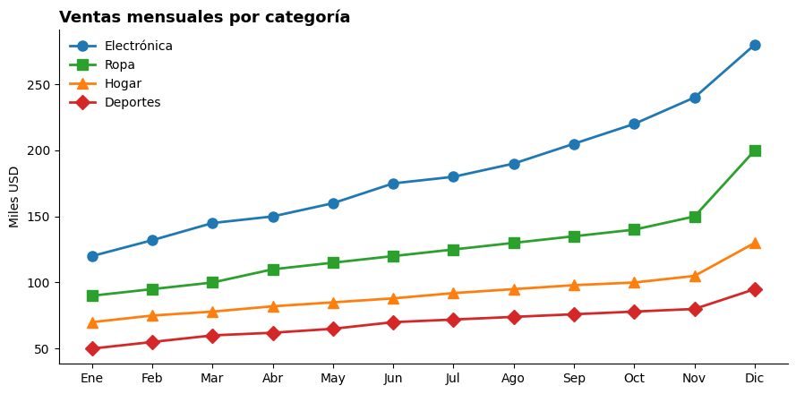
13. Checklist final ✅#
Antes de publicar cualquier visualización, repasa esta lista:
¿Tiene un propósito claro? Una pregunta, una respuesta.
¿El título cuenta la conclusión?
¿Eliminé elementos decorativos (chartjunk)?
¿Hay jerarquía visual que guíe la mirada?
¿Los colores son consistentes entre gráficos del mismo informe?
¿Usé como máximo 5-7 colores distintos?
¿La paleta es accesible (apta para daltonismo)?
¿Los ejes parten de cero (en gráficos de barras)?
¿Las etiquetas son descriptivas y no abreviadas en exceso?
¿Hay suficiente espacio en blanco?
¿Filtré datos irrelevantes?
¿Pasaría la prueba de los 5 segundos (¿se entiende rápido?)?
📚 Recursos para seguir aprendiendo#
Libros: The Visual Display of Quantitative Information (Edward Tufte), Storytelling with Data (Cole Nussbaumer Knaflic), Fundamentals of Data Visualization (Claus Wilke).
Documentación: matplotlib.org, seaborn.pydata.org, plotly.com/python.
Inspiración: flowingdata.com, informationisbeautiful.net.
Paletas accesibles: colorbrewer2.org.
«La visualización es la representación gráfica de la información para amplificar la cognición.» — Card, Mackinlay & Shneiderman